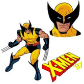

 Wolverine, ou Logan, é um dos personagens mais icônicos da Marvel, conhecido por suas habilidades de cura regenerativa, sentidos aguçados e garras retráteis de adamantium. Nascido como James Howlett no século XIX no Canadá, ele passou por uma infância traumática, marcada pela morte de seus pais e pela descoberta de seus poderes. Logan viveu como um fora da lei, lutando em várias guerras ao longo de sua vida, o que o tornou um combatente experiente. Ele foi recrutado para o programa Arma X, onde seu esqueleto foi revestido com adamantium, tornando-o quase indestrutível. Essa transformação o deixou traumatizado e, muitas vezes, em conflito com sua natureza selvagem. Ao longo de sua jornada, Wolverine se juntou aos X-Men, onde se tornou um dos membros mais importantes e complexos do grupo. Ele é conhecido por seu caráter solitário, sua luta interna contra seus instintos animais e seu desejo de proteger os mais fracos. Sua vida é repleta de desafios emocionais, relações complicadas e um constante esforço para encontrar seu lugar em um mundo que muitas vezes o teme e o odeia.